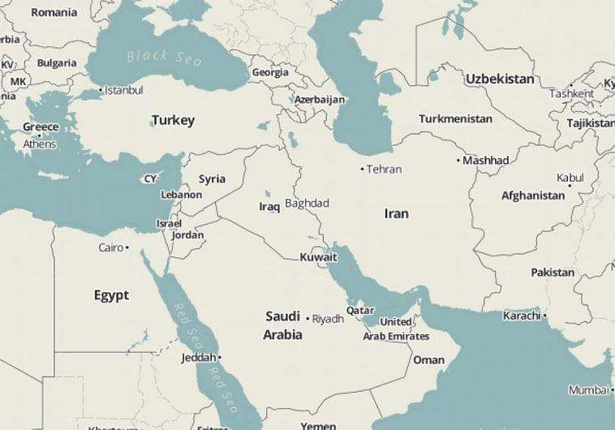

Titre original: Sykes-Picot’s demise, éditorial du Jerusalem Post, 15 mai 2016 Traduction française: Menahem R. Macina
Il y a cent ans aujourd'hui la Grande-Bretagne et la France se sont réparti les sphères d'influences de l’Empire ottoman en voie de désintégration. Cet arrangement secret porte le nom d'accords Sykes-Picot 1. En gros, ils ont créé les frontières du Levant, telles que nous les connaissons.

Mais l'histoire semble avoir pris sa revanche sur le diplomate britannique Mark Sykes et son homologue français François Georges-Picot, qui ont scellé l'accord qui porte leurs noms. La Syrie se fragmente progressivement en plusieurs entités. L’Irak se fracture en lignes sectaires qui lui sont propres. Les zones chiites du sud de l'Irak, près de la frontière avec le Koweït, font de plus en plus pression pour obtenir l’autonomie, avec le soutien de l'Iran. Et les tribus sunnites d’Irak ont uni leurs forces contre le régime d’Assad, en créant un autre groupe sectaire distinct en Irak. La Libye n’est plus une entité nationale unique, et le Yémen est déchiré entre l'Iran et l'Arabie Saoudite. Même des pays qui n’ont pas été créés par les accords Sykes-Picot, tel l'Égypte, sont en proie à des troubles et à l'instabilité. Il n’est pas étonnant que les commentateurs, journalistes et analystes spécialisés dans les affaires du Moyen-Orient - y compris le comité de rédaction du Jerusalem Post – aient, depuis un certain temps, proclamé la mort des accords Sykes-Picot. Pourtant, parmi tous les bouleversements et les effusions de sang dont nous avons été témoins dans la région, et qui ont conduit à l’effondrement des accords Sykes- Picot, il subsiste une oasis de stabilité: l'État d'Israël. Et ce n'est pas une coïncidence. Cet état de choses est partiellement dû au caractère national d'Israël. Contrairement aux créations nationales artificielles, comme la Syrie et l'Irak, qui ont des populations différentes, Israël a été créé pour un peuple spécifique qui a une histoire, une culture et une religion communes. Malgré tous ses conflits internes - entre religieux et laïques, ashkénazes et séfarades - il y a néanmoins un dénominateur commun qui unit la grande majorité des Israéliens. Mais la population relativement homogène d'Israël ne constitue qu'une explication partielle de ce succès. Beaucoup plus important est le fait qu’Israël demeure la seule démocratie du Moyen-Orient. La désintégration de l'ordre ancien dans la région est davantage due à l'échec de régimes autocratiques corrompus, inadéquats et violents, qu’aux frontières artificielles qui ne tenaient pas compte des différences ethniques, sectaires, et culturelles. Ce ne sont pas les accords Sykes-Picot qui sont responsables de la désintégration de la Syrie, de l'Irak, de la Libye et du Yémen: mais plutôt le caractère autocratique des dirigeants politiques de ces pays. Le conflit syrien a commencé comme un soulèvement de tous les Syriens - hommes et femmes, jeunes et vieux, sunnites, chiites, Kurdes et même alaouites - contre un autocrate corrompu, injuste, sans contact avec son peuple et insensible à ses aspirations. Et la même chose s’est produite pour les Libyens, les Égyptiens, les Tunisiens, les Yéménites et les Bahreïnis, en 2010 et 2011. Au milieu de ce bouleversement, Israël se distingue comme un modèle de stabilité, de liberté et de prospérité économique. Une force militaire nationale, qui repose sur une armée populaire fidèle à des principes éthiques exigeants, a réussi à intégrer un large éventail de populations diverses - y compris des Bédouins, des Druzes et des chrétiens. Tout en étant un État juif avec des symboles et des lois juives, et qui donne la priorité aux Juifs dans des domaines tels que l'immigration, la démocratie du pays protège également les droits fondamentaux d'une importante minorité non juive. Tous les citoyens jouissent de l'égalité devant la loi, de la liberté d'expression, du droit de vote et d'autres droits démocratiques fondamentaux. L’économie dynamique d'Israël offre à tous les citoyens des possibilités économiques qui rivalisent avec d’autres économies avancées.
Cela ne veut pas dire que les tensions n'existent pas au sein de la société israélienne. Toutefois, elles sont gérables dans le cadre de concessions mutuelles démocratiques et ne menacent pas de déchirer le tissu de la société. Dans un futur proche, dans le cadre de la fin de la guerre civile qui déchire la Syrie, les négociations porteront sur le découpage des territoires qui étaient autrefois sous le contrôle du régime d’Assad. Une région côtière sera très probablement octroyée à ceux qui sont loyalistes envers le régime alaouite de Bachar al-Assad; une autre bande de territoire, qui reste encore à déterminer passera sous le contrôle des forces d'opposition sunnite; et une enclave kurde ayant des liens avec le nord de l'Irak et les Kurdes de Turquie sera probablement créée aussi. Dans le cadre d'un tel arrangement, il est temps que le monde reconnaisse l’annexion de facto par Israël des hauteurs du Golan, en 1981. Un siècle après les accords Sykes-Picot, aucun autre pays de la région n’a donné plus de preuves de sa stabilité. Il est temps de le reconnaître désormais.
© The Jerusalem Post
Mise en ligne sur le site Academia.edu, le 16 mai 2016
1 Pour mémoire, il s’agit « des accords secrets signés le 16 mai 1916, après négociations entre novembre 1915 et mars 1916, entre la France et le Royaume-Uni (avec l'aval de l'Empire russe et du royaume d'Italie), prévoyant le partage du Proche-Orient à la fin de la guerre (espace compris entre la mer Noire, la mer Méditerranée, la mer Rouge, l'océan Indien et la mer Caspienne) en plusieurs zones d'influence au profit de ces puissances, ce qui revenait à dépecer l'Empire ottoman. Ces accords secrets n'ont été finalement révélés au grand public que le 23 novembre 1917 dans un article des Izvestia et de la Pravda, et le 26 novembre 1917, dans un article du Manchester Guardian. (Extrait de l’article Sykes-Picot, de Wikipédia). ↩